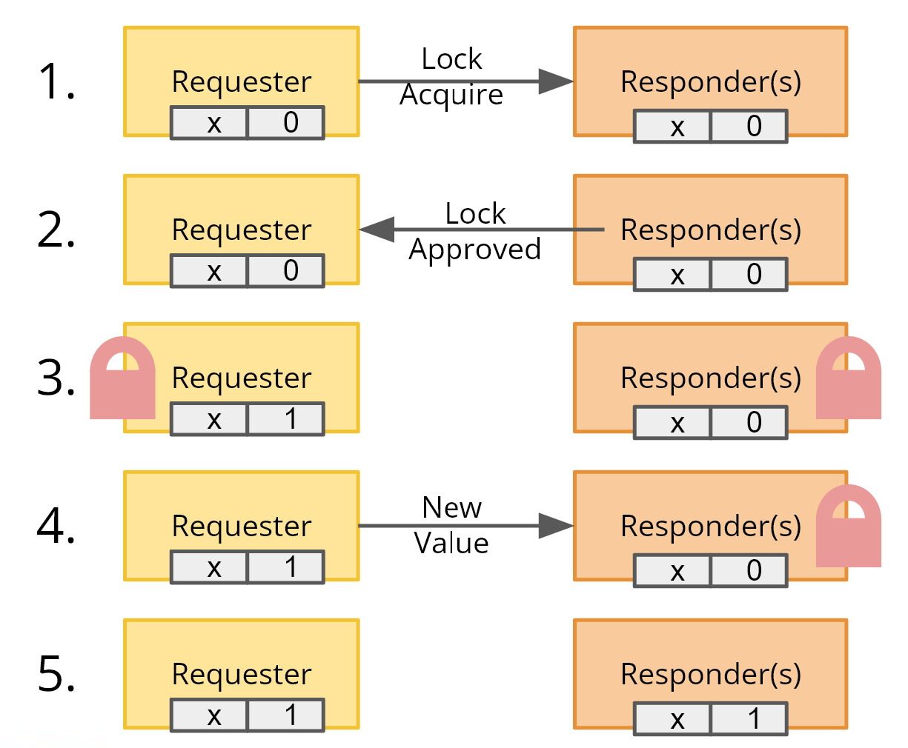
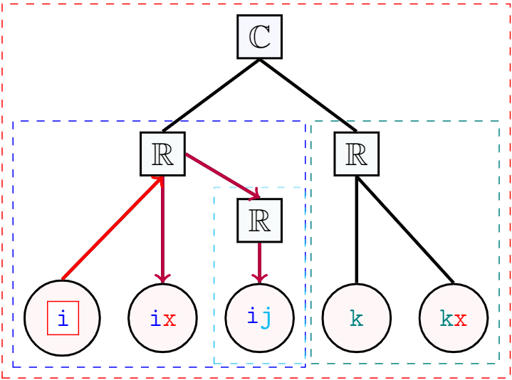
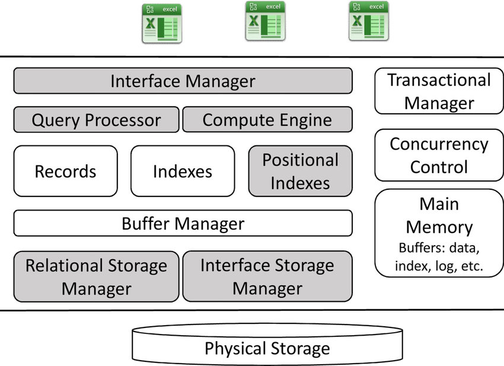
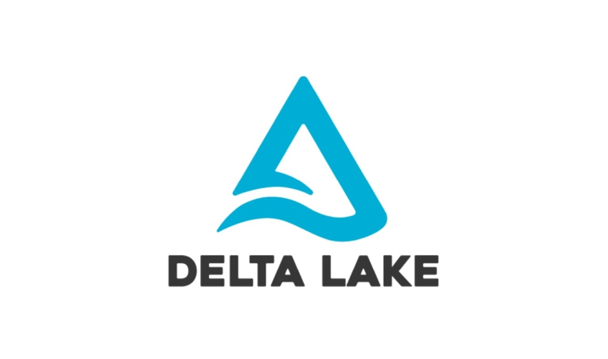

I am a software engineer at Meta.
I graduated from UC Berkeley in 2022 with a B.A. in Computer Science.
I currently work on Meta's internal time-series database, serving high-availability metrics at Meta-sized request scale. Before that, I worked on Meta's blob storage system — the backbone behind every message, video, cat picture, etc. on exabyte scale.
My interests primarily lie in computer systems — from distributed systems to the nitty gritty of operating systems, linux, and architecture. Always seeking novel opportunities and getting my hands dirty to learn the ins and outs of bare-metal computers.
I was part of the Fog Robotics team working on flat routing protocols.
Teaching
- Spring 2022: UGSI for CS 162: Operating Systems and Systems Programming
- Fall 2021: Reader for CS 162: Operating Systems and Systems Programming
- Spring 2021: Reader for CS 162: Operating Systems and Systems Programming
- Spring 2020: Reader for CS 182: Designing, Visualizing and Understanding Deep Neural Networks
Projects
-

Release Consistent Locking for PSL provides a stronger guarantee than eventual consistency model, removing the possibility of nodes using old values for computation. We implemented and benchmarked our implementation of release consistent locking on the PSL distributed key-value store allowing for distributed data-centric applications requiring stronger data consistency.
-

Paranoid Stateful Lambda system provides a key-value store implemented on top of the GDP, allowing for multiple simultaneous writes with an eventually consistent semantics. We designed a new multicast message-passing protocol to improve scalability of all-to-all communication involved in the PSL key-value store.
-

-

Delta Lake is a high performance open source ACID table storage layer over cloud object stores. I built a RocksDB-backed caching layer on top of Delta Lake to support OLTP fast point-lookup and write operations.